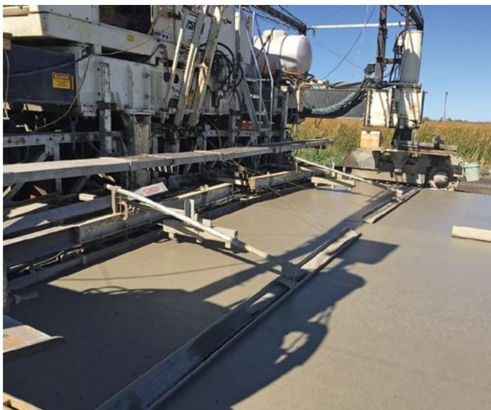
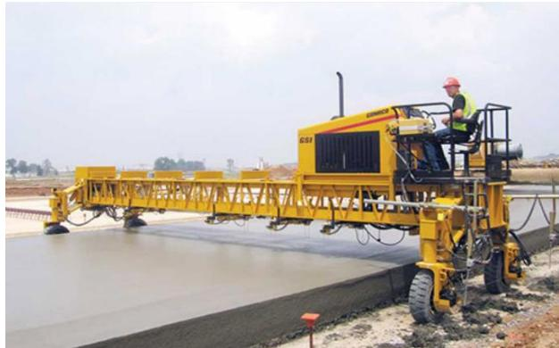
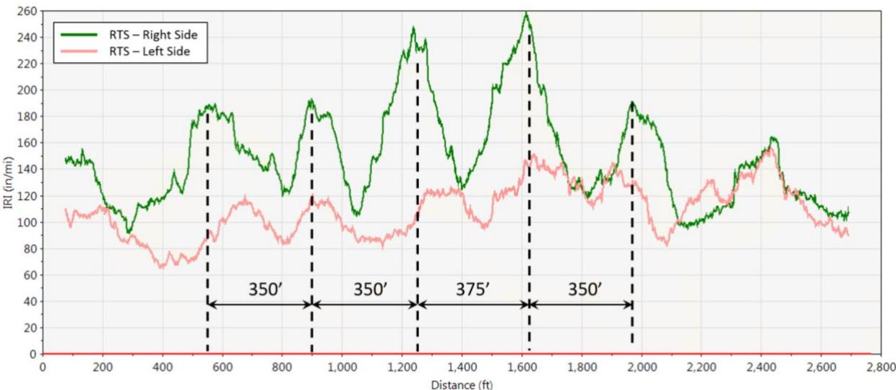

Real-Time Smoothness Monitoring
Real‑Time Smoothness Monitoring is a quality‑control process that continuously evaluates the surface roughness of freshly placed Portland‑cement concrete pavements by capturing height, slope and distance data with laser or sonic sensors mounted on the slipform paver or a trailing bridge [1][2][4][5][6]. The system instantly converts these measurements into smoothness statistics such as the International Roughness Index or Profile Index and displays a live index and shift histogram, providing crews immediate feedback that can be correlated with paver speed, vibrator frequency, mix workability, start/stop locations and other placement variables [1][2][5][6]. This on‑the‑fly information serves as an early‑warning tool to keep the pavement within agency‑mandated smoothness tolerances, allowing rapid adjustments before the concrete hardens and reducing the need for costly post‑placement grinding or rework [1][2][4][5][6].
Sources (7)
Purpose and quality objectives
Across the guides, Real‑Time Smoothness Monitoring is defined as a quality‑control process that evaluates the surface smoothness (roughness) of freshly placed Portland‑cement concrete pavements. Sensors mounted on the paver or a trailing bridge continuously capture height, slope and distance data, which are “Both systems use a combination of height, slope, and distance data that are continuously collected and converted to a real-time profile and smoothness statistic (International Roughness Index (IRI), Profile Index (PI), must grinds, and localized roughness).” The system instantly computes a smoothness index—often shown with a histogram—as “The display includes a report of the current smoothness index and a histogram of results for the shift,” providing “RTS systems can provide instant feedback that allows contractors to adjust their processes to improve the initial smoothness characteristics (overall smoothness and localized roughness) of the new concrete pavement.” This immediate feedback lets crews compare operational variables, such as “… Paver speed to smoothness results,” vibrator frequency, start/stop locations, and mix distribution, and to “Smoothness profiles – correlate roughness to any events noted during paving.” In addition, the real‑time profile serves as an indirect gauge of concrete workability, because “In addition to measuring smoothness, the RTS profile of a newly placed pavement reflects the workability of the mix,” enabling rapid adjustments to meet agency smoothness tolerances and improve initial ride quality. [1][2][4][5][6]
The following figure illustrates two common examples of these real-time monitoring systems.

Real-time smoothness devices: Gomaco GSI (left) and Ames Engineering RTP (right) [1]The image displays a large slipform paver actively placing concrete, with the caption identifying specific real-time smoothness monitoring systems mounted on the equipment.
[1] — Ch. 9 (p. 273), Ch. 10 (p. 316); [2] — Ch. 5 (pp. 281–286); [4] — Ch. 4 (pp. 81–82); [5] — 5. Plant Site and Mixture Prod… (pp. 72–73); [6] — BACKGROUND (pp. 12–14), Construction Practices to Achi… (pp. 31–32), Description (pp. 46–47), Key Points for Using RTS Devic… (p. 47), Paver Speed (p. 39)
Across the guides, Real‑Time Smoothness Monitoring is used to satisfy the quality requirement that a newly placed concrete pavement achieve the specified initial smoothness level— a condition that underlies ride quality, durability, fuel efficiency and agency‑mandated smoothness tolerances. By mounting laser or sonic sensors on the paver, RTS continuously records height and slope data and converts them into an instant smoothness index (e.g., IRI or Profile Index). This immediate feedback alerts the QC manager and paving crew to any excessive waviness or localized roughness before the concrete hardens, providing an early‑warning tool that prevents out‑of‑tolerance surface defects that would otherwise require costly grinding, panel replacement, or rework. The system also creates a feedback loop that links measured roughness to specific paving actions—such as paver speed, vibrator frequency, mix workability, distribution rates and start/stop locations—allowing rapid adjustments of those parameters to bring the pavement back within acceptable smoothness limits. [1][2][4][5][6]
The following figure illustrates the two primary configurations of real-time smoothness sensor equipment used to capture this data.

A yellow slipform paver equipped with a Real-Time Smoothness (RTS) sensor array actively finishing a concrete pavement. [2]The image displays a large, yellow slipform paver machine operating on a fresh concrete slab, featuring an operator station and a long truss structure extending over the wet surface.
[1] — Ch. 9 (p. 273); [2] — Ch. 5 (pp. 281–286); [4] — Ch. 4 (pp. 81–82), App. D (p. 145); [5] — 5. Plant Site and Mixture Prod… (pp. 72–73); [6] — BACKGROUND (pp. 12–14), Construction Practices to Achi… (pp. 31–32), Description (pp. 46–47), Key Points for Using RTS Devic… (p. 47), Paver Speed (p. 39)
Scope and applicability
Real‑Time Smoothness Monitoring (RTS) is applicable to newly placed Portland cement concrete pavements—whether highway slabs, airport runways, taxiways or other high‑speed surfaces—where surface smoothness is a defined performance objective. The procedure requires a slipform paver (or equivalent placement equipment) equipped with laser or sonic sensors mounted on the back of the machine or on a trailing construction bridge to capture height, slope and distance data in real time. RTS can be used whenever performance‑engineered concrete mixes are employed, including situations where water content, admixture dosages, aggregate proportions, or temperature of the mix may be adjusted during placement. It supports any paving operation that involves control of paver speed, vibrator frequency, start/slow/stop locations, lateral track position, and other placement variables, and it provides immediate feedback before finishing or texturing operations. The method is also appropriate under a range of design and project conditions—such as accelerated construction schedules, vertical or horizontal curves, superelevation transitions, matching existing lanes, and other staging or incentive‑based constraints—and when agencies treat initial smoothness as a primary quality indicator within an asset‑management program. RTS is employed as an optional QC tool; the real‑time data are used to log events (e.g., stringline disturbances, 3D machine‑control issues) and guide on‑the‑fly adjustments, with follow‑up verification by a lightweight inertial profiler within 24–48 hours after paving. [1][2][4][6]
[1] — Ch. 9 (p. 273); [2] — Ch. 5 (pp. 281–286); [4] — Ch. 4 (pp. 81–82); [6] — BACKGROUND (pp. 12–14), Construction Practices to Achi… (pp. 31–32), Description (pp. 46–47), Key Points for Using RTS Devic… (p. 47)
Real‑time smoothness monitoring is not required by FAA or DOD specifications; it is provided only as an optional contractor‑chosen quality‑control tool that gives immediate feedback on paver speed, mixture changes, vibrator settings, and start/stop locations while the concrete is still plastic. Because RTS data are collected before finishing operations such as texturing, the method cannot be used for acceptance measurements and must not replace any mandated testing (e.g., straightedge, rolling inclinometer, California Profilograph) or the final inertial profiler results required for acceptance. Consequently, using RTS as a substitute for those required methods is inappropriate. The procedure is appropriate when employed as a supplemental QC technique—particularly when used in conjunction with a lightweight inertial profiler to correlate real‑time and hardened IRI values—but its limitations (plastic‑state data, pre‑finishing timing, non‑matching final IRI) must be recognized. [2][6]
[2] — Ch. 5 (pp. 281–286); [6] — Description (pp. 46–47)
Test methods and procedures
Real-Time Smoothness Monitoring (RTS) is implemented by installing profile sensors on the back of the slipform paver or on a motorized bridge that trails the machine, then transmitting the sensor output to a laptop mounted on the paver where the operator and supervisor can watch a live smoothness index and histogram for the current shift; this immediate feedback lets the crew relate changes in mixture properties, concrete distribution, paver speed, vibrator frequency, start/slow/stop locations, or lateral position to the measured profile before finishing or texturing operations. RTS is treated as an auxiliary QC tool rather than a replacement for the mandated straightedge or profilograph tests and therefore has no prescribed acceptance tolerances in the source document. [2]
[2] — Ch. 5 (pp. 281–286)
Valid Real‑Time Smoothness Monitoring depends on calibrated distance measurement devices—either a calibrated wheel mounted to the paver track or an internal encoder—and on regular verification of vibrator frequency (automatic with monitors or manually at least twice each day). Continuous recording of paver speed in a log that notes where the machine starts and stops is also required. The guides do not prescribe specific operator qualifications, nor do they identify particular environmental controls; therefore no additional qualification or control measures are mandated beyond these calibration and logging procedures. [1][5]
[1] — Ch. 9 (p. 273); [5] — 5. Plant Site and Mixture Prod… (pp. 72–73)
Sampling and testing frequency
Real‑Time Smoothness Monitoring establishes sampling locations by logging the paver’s start and stop points, using those positions as reference for smoothness checks. The excerpt does not specify a set quantity of samples, but measurement frequency is defined: vibrator readings are captured automatically with monitors or manually inspected at least twice per day, and paver speed logs support the creation of smoothness profiles that can be correlated to specific paving events. [5]
[5] — 5. Plant Site and Mixture Prod… (pp. 72–73)
In Real‑Time Smoothness Monitoring the measurement plan is defined by taking regular vibrator frequency checks—either automatically via monitors or manually at least twice each day—and by continuously logging paver speed, recording where the machine starts and stops. These data are used to generate smoothness profiles that are then correlated with any noted paving events, ensuring the sampled measurements reflect the actual material placement and process throughout the job. [5]
[5] — 5. Plant Site and Mixture Prod… (pp. 72–73)
Quality control and process monitoring
The guides advise that a real‑time smoothness monitoring system continuously capture the pavement’s geometric and process variables so that deviations can be corrected immediately. Core characteristics to record include height, slope, and travel distance of the concrete surface, producing a live profile from which smoothness indices such as the International Roughness Index (IRI), Profile Index (PI), required grind depths and localized roughness values are calculated and displayed for instant feedback. The system must also log the paver’s speed—including where the machine starts, slows or stops—and the frequency of the vibrators that consolidate the mix. Changes in concrete mixture properties and the way the fresh concrete is distributed ahead of the paver are tracked because they directly affect the resulting profile. Lateral profile data across the slab width, as well as ambient conditions such as time‑of‑day or temperature shifts, are recorded to explain any variations. An event log records every occurrence that can influence flatness—stringline disturbances, 3D machine‑control issues, track‑line irregularities, superelevation transitions, vertical curves, changes in workability, and other process adjustments—along with station, time and description, enabling data‑driven decisions. The live surface profile is also used as an indicator of mix workability and uniformity; a well‑consolidated mix shows no segregation, voids or edge‑finish defects and supports proper dowel alignment and reinforcement encapsulation. Finally, real‑time IRI values are measured during placement (recognizing they are higher than hardened measurements) and a project‑specific correlation is established early to guide speed and vibration adjustments. [1][2][5][6]
The following figure illustrates how real-time profile data captures fluctuations in the International Roughness Index relative to the distance between the paver and the robotic total station.

Real-time profile data illustrating fluctuation of IRI corresponding to distance from the paver to the robotic total station [6]The figure displays a line chart plotting International Roughness Index (IRI) against distance, showing distinct fluctuations in surface smoothness for both the right and left sides of the pavement. Vertical dashed lines mark specific intervals along the profile where significant changes or peaks occur, highlighting localized roughness variations during placement.
[1] — Ch. 9 (p. 273); [2] — Ch. 5 (pp. 281–286); [5] — 5. Plant Site and Mixture Prod… (pp. 72–73); [6] — BACKGROUND (pp. 12–14), Construction Practices to Achi… (pp. 31–32), Key Points for Using RTS Devic… (p. 47), Paver Speed (p. 39)
When the continuously collected height, slope, and distance data converted to a real‑time profile show an unacceptable rise in smoothness statistics—such as high International Roughness Index, Profile Index, must‑grind values, or pronounced localized roughness—the contractor should intervene. A rising trend, spikes, or values that exceed the tolerances defined by project specifications (e.g., FAA Item P‑501 or UFGS 32 13 14.13) in the smoothness index or its histogram also triggers QC manager action, which may include adjusting mixture properties, paver speed, vibrator frequency, start/slow/stop practices, and ordering additional straightedge or profilograph testing to verify compliance. Power spectral density analysis that reveals repeating wavelength bumps or localized roughness beyond acceptable limits similarly calls for corrective actions such as sensor re‑tuning, operational changes, or targeted grinding before final acceptance.
If the initial smoothness measured by a lightweight inertial profiler within the first 24–48 hours after paving indicates issues, or if the back‑mounted real‑time smoothness device records deviations from expected values, those out‑of‑tolerance results must prompt immediate process adjustments and may require further testing. Any observable trend or deviation in the real‑time profile—unexpected spikes, drift from target values, or irregularities linked to paver stops, machine‑control glitches, workability changes, or other logged events—should lead to a measured adjustment (one at a time) and possibly additional verification.
When the real‑time IRI recorded during paving is noticeably higher than project expectations, or when the gap between real‑time and later hardened measurements widens beyond the baseline established in the first few days of construction, the paving process must be re‑examined and further testing performed. All adjustments should be data‑driven, based on analyses of properly collected profile data, with meticulous records kept to correlate actions with smoothness outcomes. [1][2][4][6]
[1] — Ch. 9 (p. 273); [2] — Ch. 5 (pp. 281–286); [4] — Ch. 4 (pp. 81–82); [6] — Construction Practices to Achi… (pp. 31–32), Key Points for Using RTS Devic… (p. 47)
Nonconformance and corrective action
When straightedge, profilograph, or real‑time smoothness data indicate that the pavement surface exceeds the specified smoothness limits, the guides require the work to be treated as nonconforming and corrective action to be initiated before final acceptance. The required actions include prompt remedial measures such as localized diamond grinding, panel replacement, or other appropriate repairs performed with calibrated equipment and documented data collection to satisfy FAA P‑501 or UFGS 32 13 14.13 criteria. In addition, the QC plan mandates immediate adjustments to the paving process rather than merely recording the deviation. Initial smoothness must be measured with a lightweight inertial profiler (or line lasers) within the first 24–48 hours after placement, and any out‑of‑tolerance values trigger on‑the‑spot changes such as altering paver speed, vibration settings, or material placement while work continues. Real‑time measurement devices mounted on the back of the paver provide the crew with continuous data, allowing fine‑tuning of operations before the pavement hardens. [2][4]
[2] — Ch. 5 (pp. 281–286); [4] — Ch. 4 (pp. 81–82)
Documentation and reporting
Documentation for Real‑Time Smoothness Monitoring shall comprise (1) vibration frequency records – either automatically captured by monitors or measured manually at least twice per day; (2) a continuous paver‑speed log that records the exact start and stop locations of each paving pass; (3) smoothness profile data, both real‑time and hardened, correlated with any noted paving events; (4) a detailed event log that captures the time, station and description of every process adjustment or condition that could affect smoothness (e.g., stringline disturbances, 3D machine‑control issues, paver stops, workability changes, track‑line problems, superelevation transitions, vertical curves); and (5) corrective‑action entries linked to the event log whenever analysis of the profile data shows a degradation in smoothness. All conclusions about the effectiveness of adjustments must be based on the properly collected profile analyses, providing traceable quality‑control evidence. [5][6]
[5] — 5. Plant Site and Mixture Prod… (pp. 72–73); [6] — Construction Practices to Achi… (pp. 31–32)
Quality records for real‑time smoothness monitoring are captured electronically on the paver‑mounted laptop, displaying the current smoothness index and a shift histogram, and are also supplemented by a detailed log that records the time, station and description of every process adjustment or event that could affect smoothness. The electronic file is saved and transmitted to the QC manager for review either during the shift or at latest the next morning, and must be received no later than 48 hours after paving. Reviewers compare the reported index, histogram and logged events against the applicable FAA P‑501 or UFGS 32‑13‑14.13 smoothness thresholds using the software analysis tools (profile index, IRI, PSD, etc.) to identify any exceedances. When a threshold is breached, corrective actions such as mixture changes, paver speed modifications, vibrator frequency adjustments, or start/slow/stop location revisions are documented in the record and implemented before final acceptance testing. All RTS reports and adjustment logs are retained as part of the project’s CQCP documentation, providing a baseline for acceptance decisions, future performance evaluation and trend analysis across subsequent paving sections. [2][6]
[2] — Ch. 5 (pp. 281–286); [6] — Construction Practices to Achi… (pp. 31–32)
Relationship to long-term performance
Real‑time smoothness measurements serve as a proxy for the pavement’s long‑term durability: a higher initial smoothness recorded by RTS indicates that the concrete mix was well‑worked and consolidated, producing a uniform surface with proper dowel alignment and minimal voids; these characteristics translate into reduced cracking, joint faulting, and other distress mechanisms, thereby extending service life. Consequently, inspection findings that show smoother profiles are interpreted as evidence of greater resistance to future deterioration. [6]
[6] — BACKGROUND (pp. 12–14)
After paving is completed, the guides require one or more post‑construction smoothness assessments that are independent of the real‑time system. A rolling straightedge such as a California Profilograph – a 25 ft frame with a central sensing wheel that records bumps and dips on paper or digitally – may be used to capture the longitudinal profile; hand straightedge checks and approved rolling inclinometer tests are also listed as acceptable methods. Where available, an RPR‑approved non‑contact laser profiler can substitute for the Profilograph. In addition, a lightweight inertial profiler employing line‑laser technology must be run within the first 24–48 hours (or 18–36 hours) after the concrete has cured to obtain hardened IRI values. The results are compared with the real‑time data and with project tolerances (FAA P‑501, UFGS, or contract specifications); any profile that exceeds allowable limits triggers corrective actions such as grinding, resurfacing, or other remedial work. [1][2][4][6]
[1] — Ch. 10 (p. 316); [2] — Ch. 5 (pp. 281–286); [4] — Ch. 4 (pp. 81–82); [6] — Description (pp. 46–47)
References
- Integrated Materials and Construction Practices for Concrete Pavement: A State-of-the-Practice Manual (2nd edition IMCP Manual, 2019) [link]
- Best Practices Manual: Quality Control and Quality Acceptance of Concrete Airport Pavement [link]
- Implementation Manual: 3D Engineered Models for Highway Construction—The Iowa Experience (2015–Manual) [link]
- Quality Control for Concrete Paving: A Tool for Agency and Industry (Optimized for fast web viewing–2021) [link]
- Field Reference Manual for Quality Concrete Pavements (2012) [link]
- Implementation of Best Practices for Concrete Pavements: Guidelines for Specifying and Achieving Smooth Concrete Pavements (2019) [link]
- Testing Guide for Implementing Concrete Paving Quality Control Procedures (2008) [link]